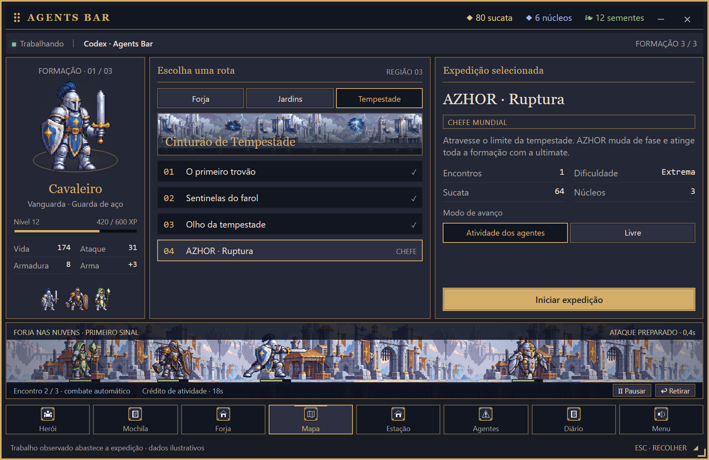
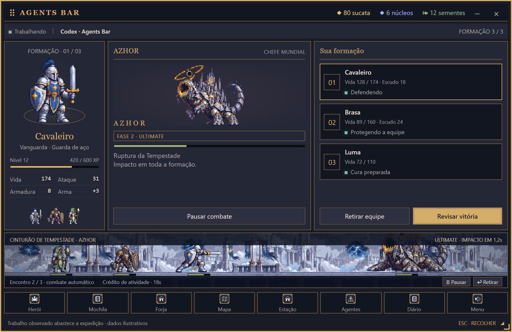
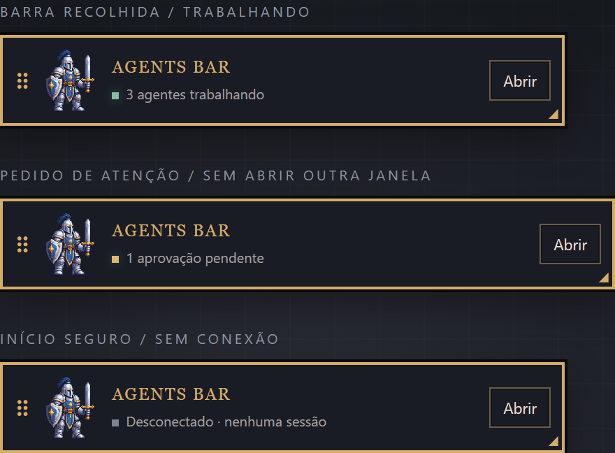

Agents Bar
O trabalho dos seus agentes de IA vira aventura. Uma equipe de heróis na sua barra de tarefas avança em missões enquanto o Claude Code, Codex e outros clientes trabalham de verdade.
Baixar para Windows Código e documentaçãoVersão de teste (0.9.12). Ainda não é a 1.0: o instalador não tem assinatura digital, então o Windows pode mostrar o aviso do SmartScreen. Pro e cobrança ainda não existem.
Como funciona
Começa desconectado
Jogue no modo Livre sem conectar nada. Nada é descoberto automaticamente.
Conexão por escolha sua
Você ativa o coletor local e instala os hooks do Claude Code com um clique, com backup e remoção segura.
Atividade verdadeira
O herói só trabalha quando há evidência. Contexto e tokens aparecem separados, sem fingir ser o consumo da conta.
Privado por padrão
Eventos ficam em 127.0.0.1. Prompts, respostas, código e caminhos não são guardados.
O jogo
Três heróis, três regiões, dez missões, três chefes regionais e o world boss AZHOR. Forja, inventário, mapa e formação ficam dentro da própria HUD, que você arrasta, redimensiona e recolhe para um modo compacto no canto.



Integrações
Claude Code (guiado na HUD, em teste), Codex, Cursor, Antigravity, Grok API e clientes MCP, conforme a capacidade real de cada um. MCP sozinho não revela o consumo de tokens. Veja os detalhes.